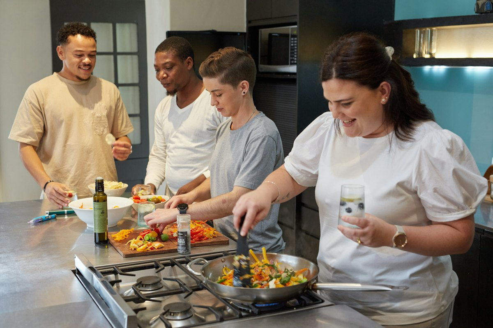

Resposta social
CACI
Centro de Atividades e Capacitação para a Inclusão. Um dia estruturado entre terapias, aprendizagens e oficinas.
- Equipa técnicaServiço social e psicologia.
- TerapiasFisioterapia, terapia ocupacional, psicomotricidade e movimento.
- AutonomiaAtividades da vida diária e aprendizagens na área da autonomia pessoal e social.
- OficinasExpressão plástica, têxteis, culinária e jardinagem.
- Desporto adaptadoNatação adaptada e golfe adaptado.
- Bem-estar e culturaMusicoterapia, cinoterapia e atividades socioculturais.